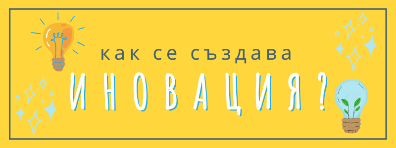

Как се създава иновация?
Как да станеш иноватор дори ако ти се струва непостижимо
Когато чуем иновация обикновено си представяме някакъв революционен продукт, който може да сътворят само гении или цял екип професионалисти с дългогодишен опит.
Това е така наречената подривна иновация, която за разлика от поддържащата иновация, изисква доста усилия и проучвания. За примерен резултат може да дадем автомобила, телефона или пластмасата. Често наричаме резултата изобретение.
Но всъщност по- често иновацията е просто усъвършенстване на концепция, процес или продукт, което е достижимо за всеки с малко фантазия, недоволство и неприятни преживявания, които не бихме пожелали на друг.
А ще се съгласите, че тези условия не са трудно постижими.
Със сигурност сте сблъскали с недомислици и сте си казали “ето така може да се реши този проблем”, но сте отминали и сте продължили с живота си. Дали защото е било еднократно, дали защото ви е било срам да кажете, че въпреки че това винаги се е правило така, не е окей.
Важното е, че идеите не са кът, просто ви трябва повече мотивация, за да убедите другите, че методът ви е по- добър, че така ще спестите пари, време и нерви и така нататък.
Веднъж решите ли, че ще тръгнете по този път имате нужда от следните елементи:
- - механизми, с които да превърнете единичния случай в надежден иновационнен процес;
- - институции, с които може да обменяте технологично ноу-хау; и…
- - подкрепа: било то морална, интелектуална или материална.
Разбира се, винаги е по- лесно да карате по начина, по който нещата са правени преди- дори да се провалите, никой не може да ви упрекне, че сте следвали “проверената” пътека. Но тъй като клиентите придобиват все по- голям избор, нараства и предпочитание им за функционалност, надеждност, удобство и добра цена.
Механизми
До нововъведение може да се стигне по различни начини.
Най- често се започва със забелязване на някакъв проблем, който не би било лошо да се реши.
След това може да се опитате да го опростите: чрез премахване на излишното ще стигнете до същността му. А понякога нагледният проблем се корени съвсем не където ни се струва първоначално.
Щом сме формулирали задоволително какво искаме да постигнем е време да се огледаме за липсващия ключ: да се потопим в нови идеи, да потърсим в записките си или ако доста сме се мариновали вече да оставим въображението си на воля.
Често решение е прилагането на даден похват, използван от една дисциплина или индустрия в друга. Или комбинирането на две съвсем различни идеи, методи или неща. Обикновено така се раждат японските странни иновации като селфи стика, курабийката с късметче или така наречените чиндогу, смахнати и на практика безполезни джаджи като клечки за ядене с вградена лупа например.
От друга страна докато изследвате възможности може да попаднете на интересен резултат. Така се оказва, че имате решение, но не знаете какво приложение може да има: такъв е случая със слабото лепило, което по- късно ще послужи за лепящите се листчета.
Важен елемент на иновациите е цената на технологичните нововъведения. Ако намерим начин да постигнем същия ефект, но с по- евтини материали или с по- кратък производствен процес, това прави иновацията по- достъпна.
Или да направим процеса по- чист, с по- малко разхищения или не толкова стресиращ.
Как да решите върху какво да работите?
Във всеки по- голям проект има труден избор, а именно между възползване (exploit) и проучване (explore). Тоест дали да продължаваме да дълбаем в посоката, по която сме поели, или да намерим нова.
Разбира се ако става дума за дългосрочен ангажимент- няма място само за едното или другото, а трябва и двете. Защото колкото и богата да е мината, която сме намерили, все свършва и другите ни задминават, ако не сме инвестирали усилия в нещо ново междувременно.
Повечето идеи не са революционни, а дори и да са пак са по- скоро производни или инкрементални: тоест или произтичат от стари идеи или са подобрения стъпка по стъпка. Всяка малка стъпка помага, а ако се натрупат и погледнете назад може да се учудите колко далече сте стигнали.
Ако имате късмет да имате няколко следи, търсете там, където малки промени биха имали големи последствия. Например, ако има разлики по в началото на даден процес, най- вероятно това ще повлияе повече на крайния резултат. Или ако някоя част от услугата е особено важна за клиентите ви, фокусирайте се върху това да я направите по- добра. После ще обърнете внимание на по- интересните за вас аспекти, които другите още не са се научили да ценят.
Докато работите, помнете, че колкото и да сте умни, не може да си спомните всичката необходима информация и прозрения наведнъж. Щом гении като Леонардо да Винчи има нужда от бележник, това значи, че е отлична идея и вие да се сдобиете с такъв. Днес по- скоро ще става дума за дигитални бележки в приложение като Notion, Evernote или OneNote. Но и хартиените се връщат на мода, като например така наречените bullet journal.
А ако този начин на живот вземе да ви харесва, идете в епицентъра, където разни идеи и разни хора може да се омешват: Ню Орлеанс за музиканти, Силициевата долина за програмисти, или Холивуд за актьори. В нашия случай- може би София. Не е същото, но друга алтернатива в наше време са онлайн групите и форумите. Ако такива, каквито ви трябват не съществуват, създайте ги!
Институции
Не мислим за България като за супер модерна, но се оказваме в топ 50 на най-иновативните държави в света според класацията на медийната компания Bloomberg. Въпреки че в сравнение със страните от Европейския съюз изоставаме.
В САЩ повече от 70% от патентите се базоират на университетски резултати, в Европа този процент е под 10% заради разрешителните, които установяват интелектуалната собственост.
Все пак ако се чудим откъде да започнем или развием бизнеса си, Единният център за иновации на БАН редовно публикува бюлетин, в който се търсят предприятия, които да се възползват от нови технологии.
Подкрепа
Тъй като само идеята или дори създаването на (работещ) прототип или решение не е достаъчно, при всяко иновативно начинание е нужна подкрепа.
Било то под формата на доверен ръководител или сътрудник, който да се застъпва за предложенията ви, било от вътрешната ви увереност. Трябва ви също някой, с който да обсъждате заформящите се идеи или поне да ви окуражава.
И разбира се необходими са средства: както матерални (инструменти, пространство и т.н.), така и парични.
Ще разберете, че някой наистина ви подкрепя, ако освен с думи ви подкрепя с време, пари или друга инвестиция.
Ако някой се колебае, не го занимавайте, а потърсете друга подкрепа. Когато имате повече резултати, повече хора ще се качат на вашия кораб.
Оптимизация
Обикновено за най- голям враг на иновациите се смята рутината и липсата на креативност, но има друг не толкова очевиден, а именно преждевременната оптимизация.
Освен ако бизнеса ви не се занимава със стотици хиляди потребители или клиенти, няма смисъл да се тревожите толкова какъв цвят е бутона за поръчки на сайта ви.
Няма смисъл да си спестявате някои стъпки, които допадат на най- големите ви фенове за да спестите време, когато най- важното в момента е да докажете, че сте ангажирани и стабилни.
Поддръжка
Създаването на свежи или подобрени неща в света е хубаво, но понякога сме заслепени от новото и забравяме колко всичко се крепи на поддържането. Ако няма кой да мете улиците, да извозва боклука или да ремонтира развалените машини, дейността ще спре.
Да, правенето е важно, но също така ученето, подлагането на критика и полагането на грижи. В работен контекст, това значи инструктиране, анализиране и правене така, че служителите да са доволни.
Надявам се, че този обзор ви е полезен и вдъхновяващ!
За обучението на служителите ви в нововъведения, вижте безплатното обучение по Обучение на работното място.